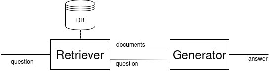
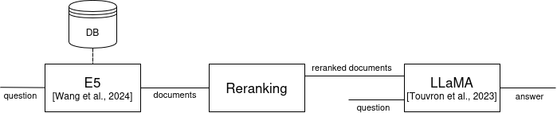
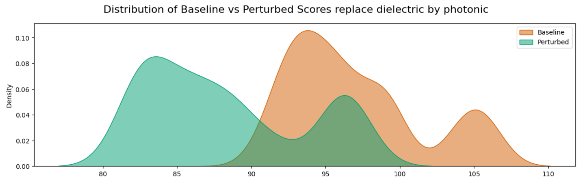
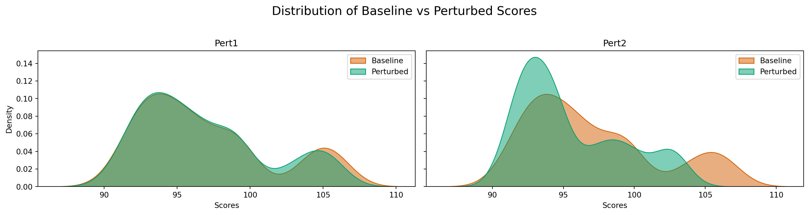
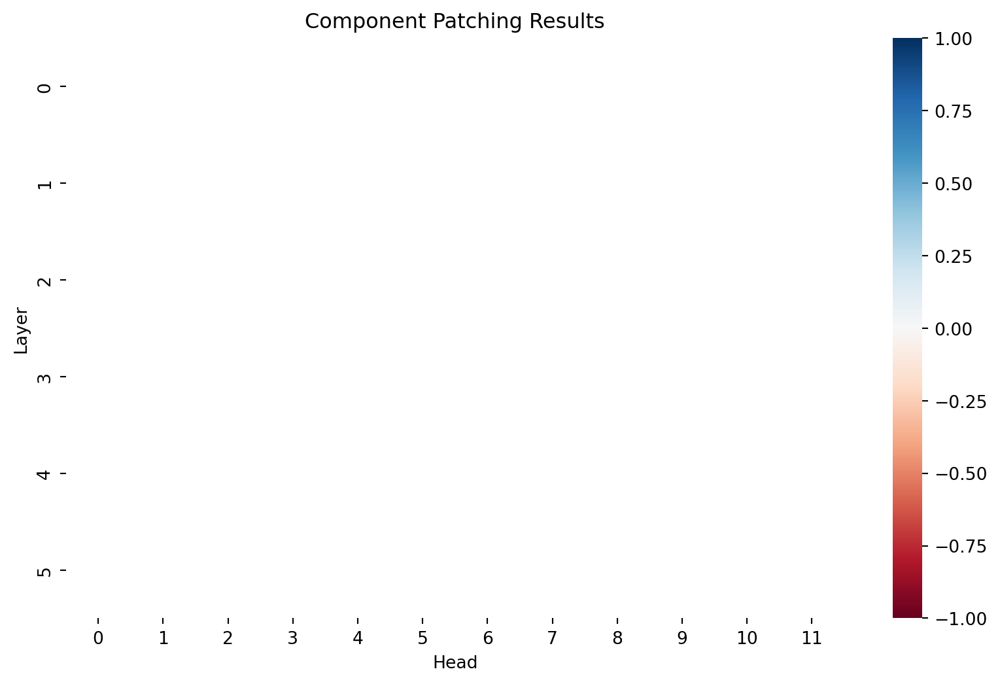

Mechanistic interpretability for enhancing RAG models
Retrieval Augmented Generation - RAG
Retrieval Augmented Generation - Definition


Example

RAG Architecture used here (inspired from (Tran et al. 2024))
Explainability in Artificial Intelligence
Explainability in Artificial Intelligence
Open black box models
Aims
- Trustability
- Understandability
- Model Rectification
Definitions
XAI : Make model’s behavior understandable for human (Bell et al. 2022)
Understand : Predict model’s behavior (Bell et al. 2022)
Explanation : Any way to make the decision process of the model understandable for human
Interpretability
How ?
Explanability
Why ?
Explanation through creation of a model
Explanation through creation of a model
Presentation and Demonstration of MechIR
MechIR
Mechanistic interpretability
Understand the internal mechanisms of neural networks by performing causal interventions on specific model components
MechIR (Parry et al. 2025)
Encoder-only models
For Information Retrieval models
Identify components responsible for some behavior
Activation Patching Technique
Activation Patching (Chen et al. 2024)
Let \(Q \times D \subset \mathcal{Q}\times\mathcal{D}\) be a set of pairs of questions and documents
Let \(Q \times \tilde{D}\) the same set of pairs but with perturbed documents
- Forward pass all \(Q\times D\)
- record \(o_{i,j}^e\) the output of each component \(n_{i,j}, \forall e \in Q\times D\)
- record \(p_D\) the performance of the model
- Forward pass all \(Q\times \tilde{D}\)
- record \(o_{i,j}^\tilde{e}\) the output of each component \(n_{i,j}, \forall \tilde{e} \in Q\times \tilde{D}\)
- record \(p_\tilde{D}\) the performance of the model
- Rewrite \(D, e, \tilde{D} \text{ and } \tilde{e}\) as
- \(\hat{D}, \hat{e}, \check{D} \text{ and } \check{e}\) if \(p_D > p_\tilde{D}\)
- \(\check{D}, \check{e}, \hat{D} \text{ and } \hat{e}\) otherwise
Activation Patching (Chen et al. 2024)
- Rewrite \(D, e, \tilde{D} \text{ and } \tilde{e}\) as
- \(\hat{D}, \hat{e}, \check{D} \text{ and } \check{e}\) if \(p_D > p_\tilde{D}\)
- \(\check{D}, \check{e}, \hat{D} \text{ and } \hat{e}\) otherwise
- For each component \(n_{i,j}\) forward pass \(Q\times\check{D}\) but replace \(o_{i,j}^{\check{e}}\) by \(o_{i,j}^{\hat{e}}\) for each \(\check{e}\). Record the performance \(\bar{p}\)
- \(P = \frac{\bar{p} - p_\hat{D} }{p_\check{D} - p_\hat{D}}\) gives the impact of the perturbation on the model performance
Animation de l’execution de Activation patching
Step 1: Choose a perturbation
Function that applies the same modification on each document.
Example :
Perturbation creation technique
- Identify vocabulary specific to the dataset
- Find in the vocabulary words with several meaning \(m_D\) and \(m_D\)
- Replace that word by a synonym of the \(m_D\) meaning
What is a good perturbation
- Has an impact of the documents representation
- Be useful for interpretation

Perturbation Score
Step 2 : Instantiate the model and load data
Moving model to device: cpu
Loaded pretrained model sebastian-hofstaetter/distilbert-dot-tas_b-b256-msmarco into HookedEncoderpert1_dot_collator = DotDataCollator(dot_model.tokenizer, pert1, q_max_length=None, d_max_length=None, perturb_type="replace")
pert1_dot_dataloader = DataLoader(dataset, batch_size=16, collate_fn=pert1_dot_collator)
pert2_dot_collator = DotDataCollator(dot_model.tokenizer, pert2, q_max_length=None, d_max_length=None, perturb_type="replace")
pert2_dot_dataloader = DataLoader(dataset, batch_size=16, collate_fn=pert2_dot_collator)Visualisation of perturbed data
solution -> answer
Query: [CLS] measurement of dielectric constant of liquids by the use of microwave techniques [SEP]
Baseline Document: [CLS] broadband millimetre wave paramagnetic resonance spectrometer the specimen and waveguide which can be cooled by means of a cryostat are placed between close pole pieces giving high uniform magnetic fields design details and some measurements on zero field splittings are given [SEP]
Perturbed Document: [CLS] broadband millimetre wave paramagnetic resonance spectrometer the specimen and waveguide which can be cooled by means of a cryostat are placed between close pole pieces giving high uniform magnetic fields design details and some measurements on zero field splittings are given [SEP]
==================================================
Query: [CLS] measurement of dielectric constant of liquids by the use of microwave techniques [SEP]
Baseline Document: [CLS] microwave measurements of dielectric absorption in dilute solutions [SEP]
Perturbed Document: [CLS] microwave measurements of dielectric absorption in dilute answers [SEP]
==================================================microwave -> toaster
Query: [CLS] measurement of dielectric constant of liquids by the use of microwave techniques [SEP]
Baseline Document: [CLS] broadband millimetre wave paramagnetic resonance spectrometer the specimen and waveguide which can be cooled by means of a cryostat are placed between close pole pieces giving high uniform magnetic fields design details and some measurements on zero field splittings are given [SEP]
Perturbed Document: [CLS] broadband millimetre wave paramagnetic resonance spectrometer the specimen and waveguide which can be cooled by means of a cryostat are placed between close pole pieces giving high uniform magnetic fields design details and some measurements on zero field splittings are given [SEP]
==================================================
Query: [CLS] measurement of dielectric constant of liquids by the use of microwave techniques [SEP]
Baseline Document: [CLS] microwave a measurements of dielectric absorption in dilute solutions [SEP]
Perturbed Document: [CLS] toaster measurements of dielectric absorption in dilute solutions [SEP]
==================================================Step 4 : Measure the impact of the perturbation on the model
# Initialize lists to store baseline and perturbed performances for each dataloader
all_baseline_performance = {"pert1": [], "pert2": []}
all_perturbed_performance = {"pert1": [], "pert2": []}
# Calculate performances for each perturbation_type
calculate_performance(dot_model, pert1_dot_dataloader, all_baseline_performance["pert1"], all_perturbed_performance["pert1"])
calculate_performance(dot_model, pert2_dot_dataloader, all_baseline_performance["pert2"], all_perturbed_performance["pert2"])
plot_score_dists_mult(all_baseline_performance, all_perturbed_performance, plot_type="kde")
Step 5 : Chart the sensitivity of the model to the perturbation

Perspective : Enhance a model with MechIR
TODO